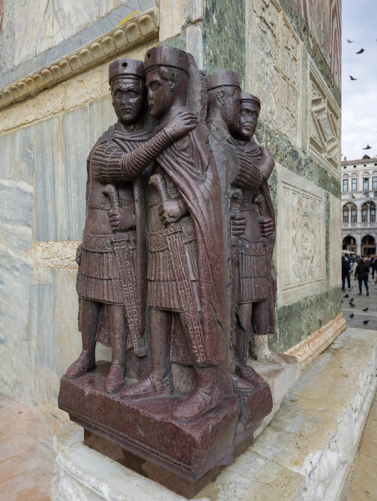

Tetrarchy
| Tetrarchy | |
|---|---|
| Period | AD 293–313 (system effectively collapsed from 306) |
| Founder | Emperor Diocletian |
| Structure | Two senior Augusti, each with a junior Caesar |
| Capitals | Nicomedia, Mediolanum (Milan), Aquileia, Thessalonica, Sirmium, Augusta Treverorum (Trier), Antioch, Carnuntum |

The Tetrarchy (from Greek tetrarchia, "rule of four") was the system of government instituted by the Roman emperor Diocletian in AD 293 to stabilise the empire after the Crisis of the Third Century. Diocletian divided imperial power among four rulers: two senior emperors (Augusti) and two junior colleagues (Caesares) designated as their heirs. The system stabilised the empire and enabled Diocletian's sweeping administrative, military and economic reforms, but it fell apart in civil wars soon after his abdication, and was finally superseded by Constantine the Great.
Establishment
Diocletian had already appointed Maximian as co-Augustus in 286. In March 293 he formalised a college of four: Maximian ruled the West from Milan and Trier, Diocletian the East from Nicomedia, while Galerius (based at Sirmium and Thessalonica) and Constantius Chlorus (at Trier) became Caesars, bound to the Augusti by marriage and by the ideology of Jovius and Herculius — Diocletian's line associating itself with Jupiter, Maximian's with Hercules. Each tetrarch governed a quarter of the empire and commanded its armies, allowing simultaneous responses to threats on the Rhine, Danube, Euphrates and in Egypt and Britain — Constantius recovered Britain from the usurper Allectus in 296, and Galerius defeated Persia in 298.
Abdication and collapse
On 1 May 305 Diocletian, in ill health, abdicated at Nicomedia — the only Roman emperor to retire voluntarily — and compelled Maximian to retire too. The Caesars succeeded as Augusti and appointed new Caesars, but the system ignored the adult sons of emperors: in 306 the troops in York proclaimed Constantine, son of Constantius, and in Rome Maxentius, son of Maximian, seized power. A conference at Carnuntum (308) failed to restore order, and a series of civil wars followed. Licinius and Constantine emerged as the last tetrarchs; their alliance of 313 (associated with the Edict of Milan) left two rulers, and Constantine's victory over Licinius in 324 reunited the empire under a single dynasty.
Legacy
The Tetrarchy's division of the empire into eastern and western halves, its multiplication of provinces (to about 100) grouped in dioceses under vicars, its separated civil and military careers, and its new imperial capitals all outlasted the four-man system itself and shaped the late Roman state. Its ideology of concord is embodied in the famous porphyry group of the Four Tetrarchs, now in Venice, showing the emperors as paired, nearly identical figures embracing.
See also
Diocletian · Great Persecution · Constantine the Great · Crisis of the Third Century